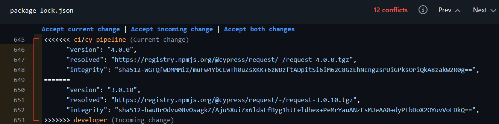

Refaktorering handler om at forbedre kodens struktur uden at ændre dens adfærd. I dette projekt er der arbejdet ud fra følgende principper:
Søgelogikken i manager/HomeView.vue blev trukket ud i en selvstændig composable useSearch.ts.
Før – søgelogikken lå hardcodet direkte i komponenten:
const searchQuery = ref('');
const searchResults = computed(() => {
if (!searchQuery.value) return userStore.clientList;
const query = searchQuery.value.toLowerCase();
return userStore.clientList.filter(client =>
client.firstName?.toLowerCase().includes(query) ||
client.lastName?.toLowerCase().includes(query) ||
client.phoneNumber?.toLowerCase().includes(query),
);
});
Efter – søgelogikken er trukket ud i useSearch.ts, og komponenten kalder blot composable'en:
// ManagerHomeView.vue
const { searchResults, onSearchFetch } = useSearch(
() => userStore.clientList,
(client, query) =>
client.firstName?.toLowerCase().includes(query) ||
client.lastName?.toLowerCase().includes(query) ||
client.phoneNumber?.toLowerCase().includes(query) ||
client.caseId?.some(ref => ref?.path?.split('/')[1]?.toLowerCase().includes(query)),
);
// useSearch.ts
export function useSearch<T>(
items: () => T[],
filterFn: (item: T, query: string) => boolean,
) {
const searchQuery = ref('');
const searchResults = computed(() => {
if (!searchQuery.value) return items();
const query = searchQuery.value.toLowerCase();
return items().filter(item => filterFn(item, query));
});
return {
searchQuery,
searchResults,
onSearchFetch
};
}
Søgelogikken var tæt koblet til manager/HomeView og kunne ikke genbruges andre steder. Ved at trække den ud i en composable opnås:
Det anbefales at læse Versionsstyring før dette afsnit.
Når en feature-branch er klar til at blive merget ind i developer, oprettes der en pull request af den ansvarlige udvikler. De øvrige gruppemedlemmer gennemgår koden som reviewers inden den merges.
Dette sikrer at:
developerMerge konflikter opstår når to branches har ændret den samme del af en fil. VS Code markerer konflikterne direkte i editoren og viser antallet øverst til højre.

Den øverste blok (markeret med <<<<<<< ci/cy_pipeline) viser koden fra den aktuelle branch, og den nederste blok (markeret med >>>>>>> developer) viser de indkommende ændringer. Skillelinjen ======= adskiller de to versioner.
Konflikten løses ved at klikke Accept current change, Accept incoming change eller Accept both changes øverst i konfliktzonen, og derefter committe resultatet.